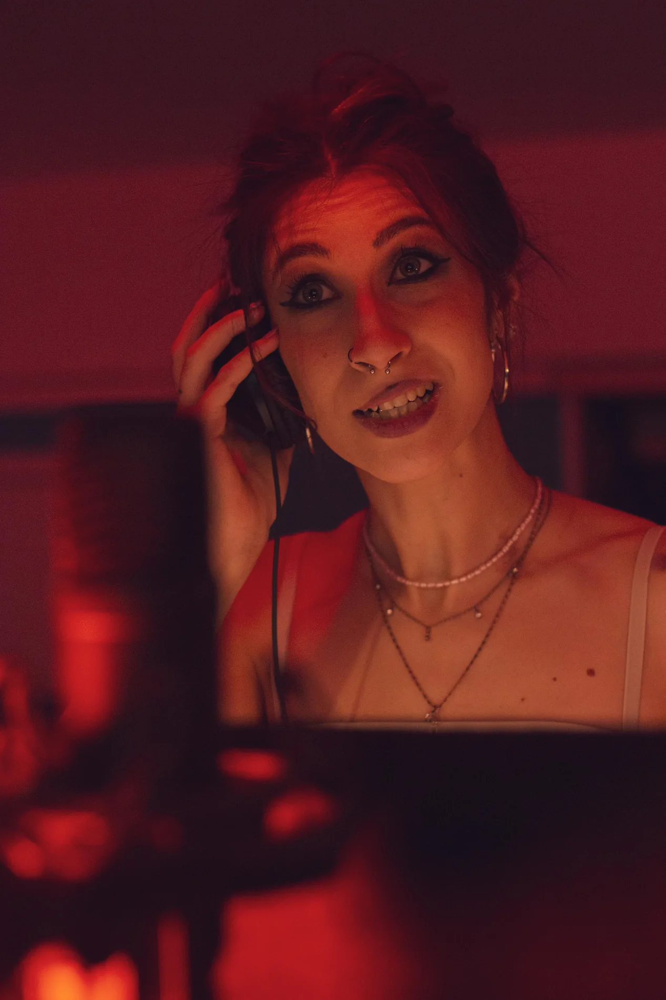

01 / IL PROVINO FINALEDalla formazione
Dalla formazione
alla sala. Davvero.
Al termine del corso di doppiaggio, un provino con direttori e maestri del settore. Un'occasione concreta per farti ascoltare.
Scopri come funziona
IL TUO POSTO, DAVANTI AL MICROFONO.
Corsi e laboratori di doppiaggio, recitazione,
teatro e dizione a Roma. Entra in una Compagnia
che crede nel tuo talento e lo mette alla prova.
Si parte dalla tua passione.
Si cresce, insieme.
LA DIFFERENZA SI SENTE.
Tre ragioni per entrare nella Compagnia.
Un percorso da vivere in prima persona.
Al termine del corso di doppiaggio, un provino con direttori e maestri del settore. Un'occasione concreta per farti ascoltare.
Scopri come funzionaInterpretazione, tecnica e ascolto: impari a usare la voce lavorando al leggìo e mettendoti in gioco.
ESERCITARSI. ASCOLTARSI. CRESCERE.Un'associazione in cui condividere esperienze, partecipare alla vita culturale e trovare il tuo spazio.
SOCI. PERSONE. POSSIBILITÀ.Le opportunità professionali dipendono dalla preparazione, dall'esito del provino e dalle esigenze delle produzioni.